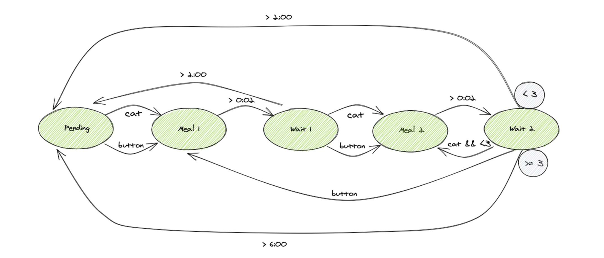

Projektübersicht
Der entwickelte Katzenfutterautomat ist ein automatisiertes Fütterungssystem mit RFID-basierter
Zugangskontrolle. Das Projekt entstand im Rahmen des Smart-Engineering-Studiums an der Fachhochschule
St.
Pölten und kombiniert Mechanik, Elektronik und Programmierung zu einem intelligenten, modularen System.
Problemstellung
- Katzenhalter müssen oft zu unpassenden Zeiten füttern.
- Mehrtierhaushalte können Probleme bei der Futterzuteilung haben.
Ziel
- Katzen mittels RFID-Chip identifiziert
- Unautorisierte Futterentnahme verhindert
- Eine maximale Anzahl an Fütterungen pro Tag erlaubt
- Fütterungspausen implementiert
- Den Fütterungsstatus über LED-Signale kommuniziert
Technologien & Methoden
- Mechanik & 3D-Druck:
- Konstruktion basierend auf einem Open-Source-Modell, erweitert durch eigene Anpassungen
- 3D-Druck mit PETG für futterberührende Teile und PLA für strukturelle Komponenten
- Elektronik:
- RFID-Modul zur Erkennung der Katze
- Stepper-Motor zur kontrollierten Futterausgabe
- LCD und LED-Kette zur Anzeige des Fütterungsstatus
- Temperatursensor zur Überwachung der Elektroniktemperatur
- Programmierung & Steuerung:
- Implementierung für Arduino
- Final-State-Machine zur Steuerung des Fütterungsprozesses
- Manuelle und automatische Fütterung über RFID oder Knopfdruck

Herausforderungen & Lösungen
- RFID-Reichweite: Alternativer Reader mit höherer Reichweite geplant
- Stromversorgung: Externe Spannungsstabilisierung für den Stepper-Motor implementiert
- LED-Ketten-Integration: Gehäusedesign modifiziert für bessere Kabelintegration
Ergebnis & Weiterentwicklung
Der Futterautomat war funktional und alle Komponenten wurden erfolgreich integriert. Zukünftige Entwicklungen
umfassen eine optimierte RFID-Erkennung und eine IoT-Anbindung zur Remote-Überwachung per
Smartphone-App.